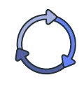
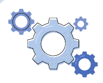
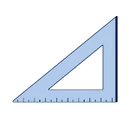
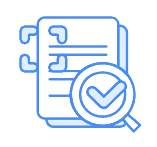
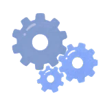
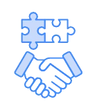
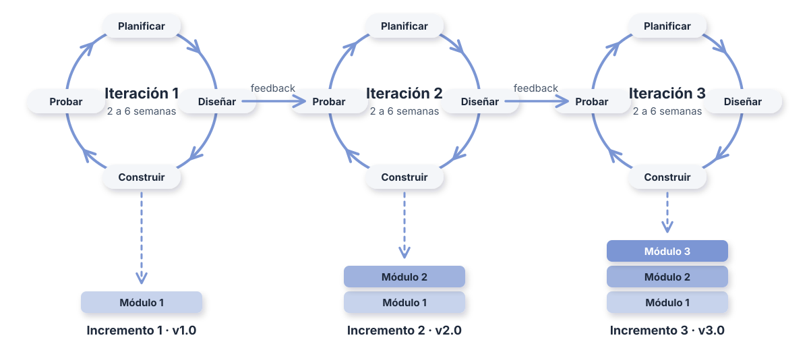

Procesos de desarrollo
de software
Ciclo de vida (SDLC), modelo en Cascada y modelo en V.

Ciclo de Vida del Desarrollo de Software (SDLC)
- Marco que define las etapas para construir software: planificación, análisis, diseño, implementación, pruebas y mantenimiento.
- Cada modelo (Cascada, V, ágiles) organiza esas etapas de una forma distinta.
- El aseguramiento de la calidad (SQA) acompaña a todas las fases, no solo a las pruebas.

Modelo en Cascada (Waterfall)
Estructura secuencial descendente para la gestión de proyectos.
Requisitos
Se recopilan y documentan todas las necesidades del cliente.

Diseño Se define la arquitectura y el diseño detallado del sistema.
Codificación
Los programadores implementan el diseño en código.

Pruebas/SQA Se verifica que el software cumpla los requisitos de calidad.
Mantenimiento Corrección de errores y mejoras una vez en producción.Modelo en V (Verification & Validation)
Relación directa entre las fases de desarrollo y sus niveles de prueba correspondientes.
Requisitos
Se valida con las Pruebas de Aceptación.
Diseño A.
Diseño de alto nivel (arquitectura). Se valida con las Pruebas de Sistema.
Diseño B.
Diseño detallado de módulos. Se valida con las Pruebas de Integración.
Codificación
Vértice de la V: implementación y pruebas unitarias.
P. Integración
Comprueba que los módulos funcionen correctamente juntos.
P. Sistema
Evalúa el sistema completo frente al diseño de alto nivel.

P. Aceptación El cliente confirma que el producto cumple los requisitos.Modelo Iterativo e Incremental
El producto se construye en varias vueltas; cada iteración entrega una versión más completa.
